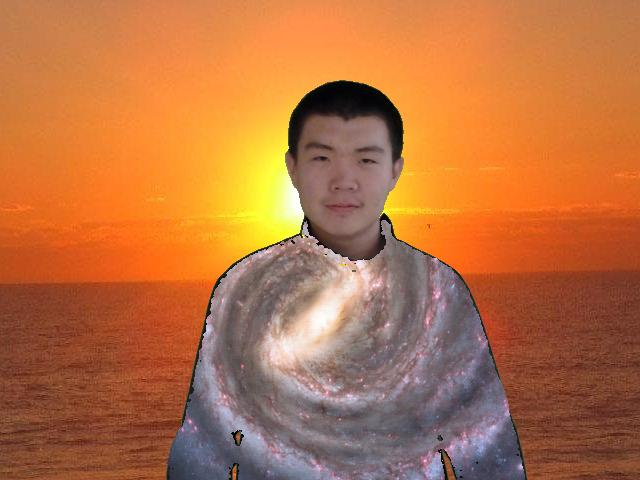

Chroma Key
Chroma key is a special effect for layering two images together by replacing certain
color in a picture with the content of another picture.
Check out Wikipedia for more
information.
Here is an example of how I create my picture on my home page.
Source Picture 1: A Picture of myself in a green background.
+
Source Picture 2: A picture of the Milky Way Galaxy.
+
Source Picture 3: A picture of sunset.
| |

The process can be explained in 3 simple steps:
1. I define a range of RGB values
that the color of my blue shirt in Picture 1 falls into.
2. I replace every pixel that is within the range I defined on Picture 1 with the
pixels of the corresponding position on Picture 2. (Assuming the top left corner of
the picture are aligned)
3. I repeat steps 1 and 2 and replace the green pixels in the background of Picture
1 with corresponding pixels of Picture 3.
|